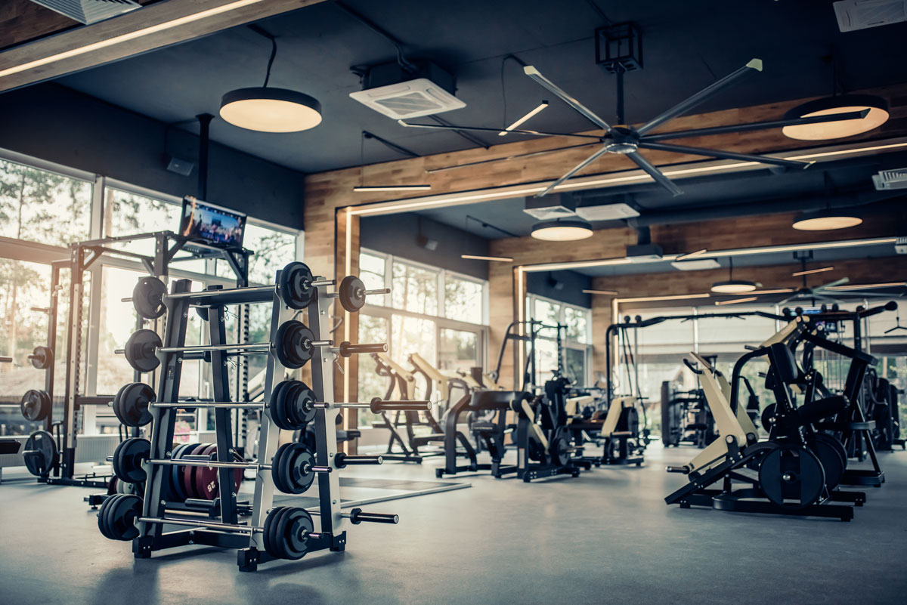

Zašto je teretana bitna za zdravlje?
Teretana je bitna za zdravlje iz više razloga. Redovno vežbanje u teretani poboljšava fizičko zdravlje, jača srce, poboljšava cirkulaciju, smanjuje rizik od mnogih bolesti, poput srčanih oboljenja i dijabetesa, i pomaže u održavanju zdrave telesne težine.
Zašto su bitni faktori u vezi teretane i treninga?
| Faktor | Značaj |
|---|---|
| Spavanje | Omogućava oporavak mišića i sprečava preterani umor. |
| Proteini | Gradivni materijal za mišiće i ključni za oporavak i rast mišića nakon treninga. |
| Hidratacija | Važna za održavanje ravnoteže elektrolita i optimalnog funkcionisanja mišića i organa tokom treninga. |
| Pravilno disanje | Pomaže u snabdevanju mišića kiseonikom i poboljšava izdržljivost tokom treninga. |
| Prestanak pušenja | Smanjuje rizik od srčanih oboljenja, poboljšava plućnu funkciju i povećava opšti nivo energije tokom treninga. |
| Raznolika ishrana | Osigurava adekvatan unos hranljivih materija potrebnih za oporavak i izgradnju mišića. |